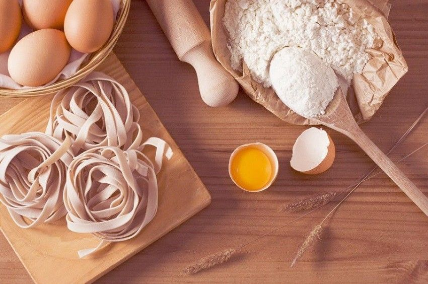

Resep Kue Maryam

BahanA-bahan :
- 250 gr tepung terigu
- 1 butir telur
- sdm margarin, lelehkan
- 100 ml air hangat
- 2 sdm susu buAbuk (optional)
- 1/2 sdt garam
- margarin leleh untuk olesan
- minyak untuk merendam
Langkah-langkah
- Campur semua bahan roti jadi satu

- Uleni sampai kalis (aku pake tangan) jangan takut jika adonan lengket ya, lumuri tangan sesekali dg
tepung (tapi jangan menambahkan tepung) uleni terus sampai adonan kalis.

- Kalisnya adonan canai tidak sekalis adonan roti ya, kira2 seperti ini sudah cukup.

-
Kalisnya adonan canai tidak sekalis adonan roti ya, kira2 seperti ini sudah cukup.

- Panggang roti dengan mentega yang cukup agar rasa gurih roti semakin kuat.